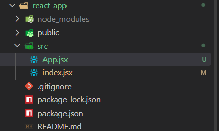
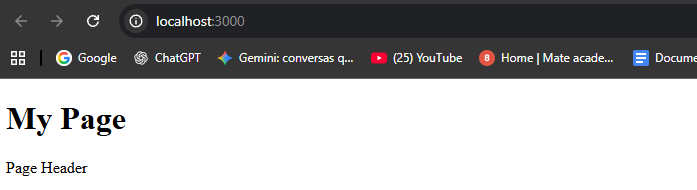

Intro:
Agora iremos ver sobre componentes, essencialmente serao os mesmos blocos BEM que usamos CSS, apenas com adicao de funcionalidade JavaScrpit.
Agora iremos ver sobre componentes, essencialmente serao os mesmos blocos BEM que usamos CSS, apenas com adicao de funcionalidade JavaScrpit.
Iremos fazer essas configuracoes em nosso react-app
Para criarmos um componente React, usamos uma funcao que deve retornar JSX.
Entao iremos criar uma function, feito isso iremos nomea-la de App que é um nome tipico para componente principal. Ficando da seguinte forma:
import { createRoot } from 'react-dom/client';
// Seletor por id
const element = document.querySelector("#root")
function App() {
}
createRoot(element).render(
< h1 >New text< /h1 >
);
Agora essa funcao deve retornar JSX, se houver apenas uma linha em nosso createRoot, por exemplo igual temos com o h1, podemos escrever diretamente apos o return. Porem geralmente temos mais de uma linha, e mesmo que seja apenas uma linha agora, pode haver mais depois.
Portanto o JSX é escrito geralmente entre parenteses e em uma nova linha, ficando da seguinte forma:
import { createRoot } from 'react-dom/client';
// Seletor por id
const element = document.querySelector("#root")
function App() {
return (
< h1 >New text< /h1 >
)
}
createRoot(element).render(
< h1 >New text< /h1 >
);
Agora temos um componente que retorna esse layout.
Podemos substituir a tag "h1" pela tag "App", ficando da seguinte forma:
import { createRoot } from 'react-dom/client';
// Seletor por id
const element = document.querySelector("#root")
function App() {
return (
< h1 >New text< /h1 >
)
}
createRoot(element).render(
< App />
);
Como este componente nao tem uma tag de fechamento, no React, é escrito como uma tag auto-fechante
No React é crucial que os componentes tenham um nome com uma letra maiuscúla. Pois se agora mudarmos esse nome para uma letra minúscula, o React pensara que é uma tag HTML regular, e nada ira funcionar. Portanto o React determina se é um elemento regular ou um componente com base na primeira letra da tag e depois o procura entre as funcoes.
A sintaxe que temos acima, pode ser um pouco simplificada, se tivermos uma funcao que imediatamente retorne um valor, podemos usar uma arrow function.
Para isso podemos ao inves de usarmos uma function diretamente, podemos passar uma const, ficando da seguinte forma:
import { createRoot } from 'react-dom/client';
// Seletor por id
const element = document.querySelector("#root")
const App = () => (
< h1 >New text< /h1 >
);
createRoot(element).render(
Se houvessem outros comandos nessa funcao, teriamos que usar chaves '{}', escrever a palavra return e retornar o JSX sendo no caso nosso < h1 >New text< /h1 >
Agora nosso proximo passo é mover um componente para um arquivo separado.
Como nossa aplicacao pode ser grande, cada componente deve estar sempre em um arquivo separado.
Para fazermos isso iremos abrir nossos arquivos dentro de nosso diretorio src, iremos criar um arquivo para o componente principal, sendo em nosso caso o App. Iremos nomea-lo da mesma forma, ficando App.jsx.

Todos os arquivos com sintaxe JSX devem ter uma extencao assim para um melhor autocompletar.
Poderia ser apenas ex: App.js, ja que o React o entende, mas no VS Code o autocompletar para HTML nao ira funcionar bem para esses arquivos. Por isso o nomeamos com .jsx.
Apos criarmos iremos acessar nosso arquivo App.jsx, feito isso iremos mover nossa funcao const App de um arquivo para outro
Apos move-lo, para o usarmos em nosso arquivo principal precisamos importa-lo. Existem duas maneiras para podermos importar:
Alem da funcao createRoot que importamos pelo nome, queremos importar algo de nosso arquivo "App.jsx". Para isso podemos usar a palavra-chave export antes da palavra chave const App, feito isso agora podemos importa-lo pelo nome ficando da seguinte forma:
ARQUIVO INDEX.JSXimport { createRoot } from 'react-dom/client';// Iremos passar o nome da variavel que esta sendo importada dentro da chaves // E dentro das aspas adicionamos o caminhho import { App } from './App'// Seletor por id const element = document.querySelector("#root") createRoot(element).render( < App /> );
ARQUIVO APP.JSXexportconst App = () => ( < h1 >New text< /h1 > );
Em nosso arquivo que estamos importando o index.jsx, temos opcao tambem de estarmos utilizando o as apos passarmos o import, exemplo:
import { createRoot } from 'react-dom/client';
// Usamos o as
import { App as Root } from './App'
// Seletor por id
const element = document.querySelector("#root")
createRoot(element).render(
< Root />
);
Com isso estamos basicamente alterando apenas a forma como iremos chamar esse componente, onde antes chamavamos App, chamamos o Root, usamos mais para podermos simplificar sua chamada, caso seja um nome complicado.
Se importarmos mais de uma variavel poderiamos adicionar uma virgula e escrever a proxima variavel, e como renome-la.
Podemos exportar tambem um valor como padrao e em seguida, um valor é exportado, ex:
// App.jsxexport const App = () => ( < h1 >New text< /h1> );export default App;
// index.jsximport { createRoot } from 'react-dom/client';// Essa forma nao é muito usada, ja que tb nao temos nem autopreencherimportValorfrom './App'; // Seletor por id const element = document.querySelector("#root") createRoot(element).render( <Valor/> );
Agora iremos criar outro componente, como ja mencionado, normalmente quando criamos componentes, criamos em diretorios separados. App é o componente principal, entao ele permanece na raiz, entao para os demais iremos criar um novo diretorio (arquivo) e chama-lo de components dentro de nosso src.
Dentro de nosso diretorio components, iremos criar outros componentes, iremos criar um chamado de Header.jsx, ele sera o header de nosso site. Iremos comecar exportando uma const, ficando da seguinte forma:
// Header.jsxexport constHeader = () => ( < header> Page Header < /header> );
Como ela é uma tag iremos escreve-la em minusculas, pois em maiusculas é um componente React e minusculas é uma tag HTML regular. Em seguida para usarmos este componente em nossa aplicacao, temos que importa-lo.
Para isso iremos voltar em nosso "App.jsx" e usar import, ficando da seguinte forma:
// App.jsximport { Header } from './components/Header';export const App = () => ( < h1>New text< /h1> );
Iremos supor que nossa aplicacao se constituida de uma div, onde dentro da qual havera alguns elementos, ficara da seguinte forma:
//Header.jsx
export const Header = () => (
< header>Page Header< /header>
);
// App.jsximport { Header } from './components/Header';export const App = () => (< h1>My Page< /h1>);//Podemos observar que sua primeira letra é maiuscula ou seja, //estamos importando a variavel.< Header />
Em nossa pagina react-app (site), teremos o seguinte resultado:

Dessa forma aprendemos a criar componentes, componentes sao funcoes que retornam JSX, para cada componente criamos seu proprio arquivo. O componente principal App.jsx estara em nosso Root, colocaremos todos os outros na pasta/diretorio components. Os components devem ter a primeira letra maiuscula, e os exportaremos como uma exportacao nomeada: "export const " seguida por seu nome.
Dentro do arquivo onde usamos o componente em nosso caso o App.jsx, fazemos uma importacao e em seguida pelo nome, importamos nosso componente do arquivo correspondente e o adiciono como uma tag